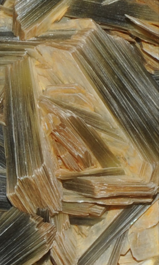
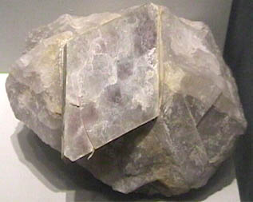
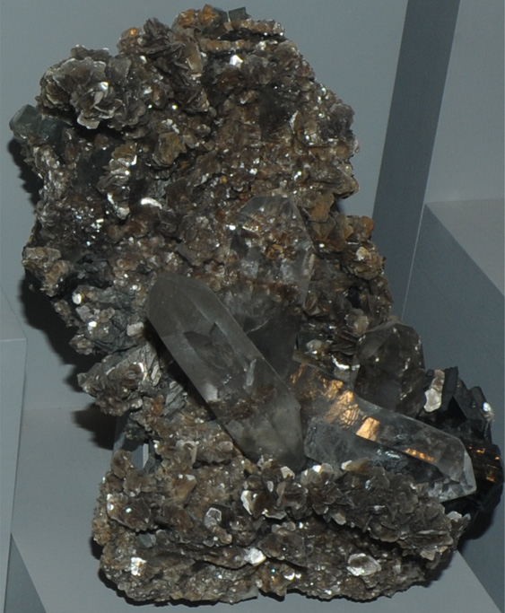
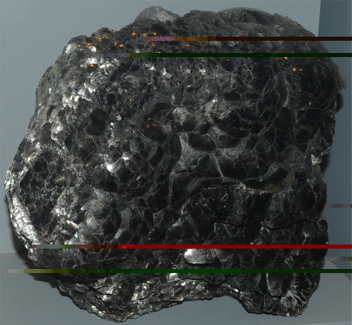
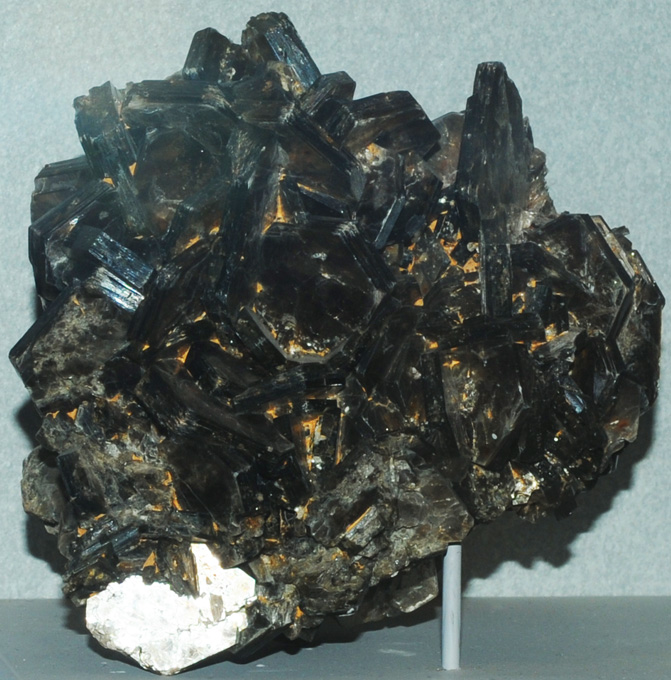
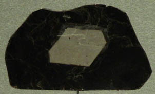
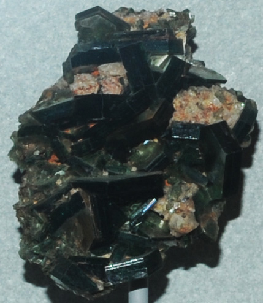

Muscovite
 | 
Muscovite and biotite are aluminum-containing silicates which cleave in thin sheets and are called micas. Muscovite has the general formula (KAl2(AlSi3O10)(OH)2) .
Muscovite has a pearly luster and can be clear in thin sheets. In small flakes, it gives sparkle to many rocks.
These samples of muscovite are on display at the Smithsonian Museum of Natural History. The sample at left is 20-30 cm high.
|
|
The muscovite sample above is from Sapucaia pegmatite, Minas Gerais, Brazil.
Mindat's comment about muscovite "The most common of the Mica Group minerals, it is typically found as massively crystalline material in "books" or in flaky grains as a constituent of many rock types. It is clear with a pearly luster on cleavage faces, often having a sparkly look in rocks."
This sample of muscovite at right. is from the Diamond mica mine in Keystone, South Dakota. There is also quartz content in the sample. The sample measures about 10 cm. |
 |
|  |
This sample of muscovite with quartz and ferberite is about 10x18 cm and is from Panasqueira, Portugal.
|
Muscovite does not always clearly show the sheet structure in its overall appearance. This sample is about 16x18 cm and is from Hoydalen, Tordal, Kragero, Norway. |
 |
|  |
This muscovite sample shows the layered structure, but the formation shows thick plates of the mineral, each of which can be separated into thin layers. This sample has overall size about 11x11 cm and is from Spruce Pine, North Carolina. |
|  |
This thin sample shows the lighter color of muscovite in the center, surrounded by darker biotite. The sample is about 12x7 cm and is from Spruce Pine, North Carolina.
|
This muscovite sample is about 10 cm across and is from Espera Feliz, Minas Gerais, Brazil. It looks dark like biotite, but is classified as muscovite. |
 |
|  |
This muscovite sample is about 8 cm across and is from Catawba County, North Carolina. Mindat: Muscovite
|
|
Index |